Stories
The written side of the arcade — deep dives, restorations, and the history hiding inside the machines. New stories land here as they're written. The words they use without explaining are in the glossary.
The newest story
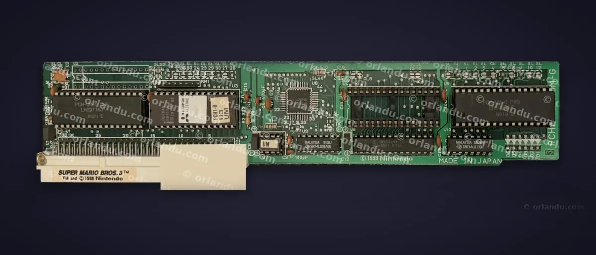
NewBy the Numbers 7 min readRanked: Every PlayChoice-10 Game, and the One That Charted Early
Nintendo Power printed a chart of America’s favorite NES games 63 times. Put the 52 PlayChoice-10 games against it and they fall into order, with Super Mario Bros. 3 on the list months before its cartridge was on sale.
Read the newest story →
Monitors & signal The Sony fleet and how a picture reaches it
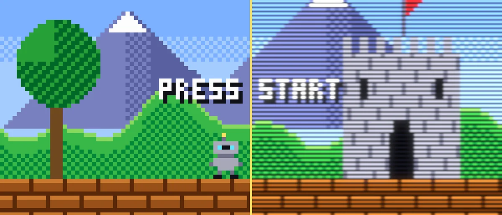
NewDid You Know? 3 min readWhy Old Games Look Wrong on a New TV
Plug a Super Nintendo into a new television and it looks harsher and blockier than you remember. Your memory is fine. The game was drawn for a screen that paints lines of light, not a grid of squares, and you can drag between the two to see the difference.
Read the story →
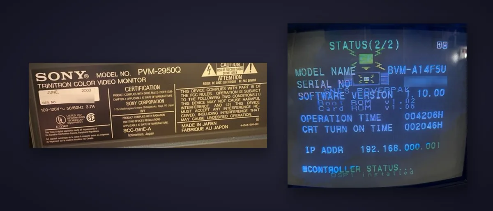
Field Guide 3 min readWhat the Plate Tells You
Sony never said when it built its broadcast monitors, but every one carries the answer. The model number gives a span of years, the plate on the back gives a month, and a BVM keeps count of its own hours. Three numbers, and what each one does and does not tell you.
Read the story →
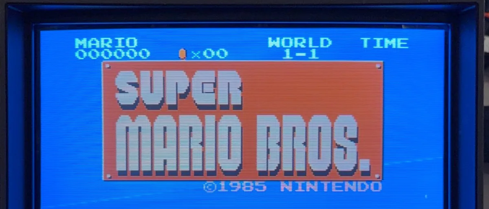
Restoration Story 5 min readThirty More Years
The BVM-20E1U arrived working and looking good. It went to SavonPat anyway: every board recapped, the tube serviced, the picture calibrated, and a verdict from a former Sony technician that it is fit to go back into the field. A full service that has nothing to do with fixing a fault.
Read the story →
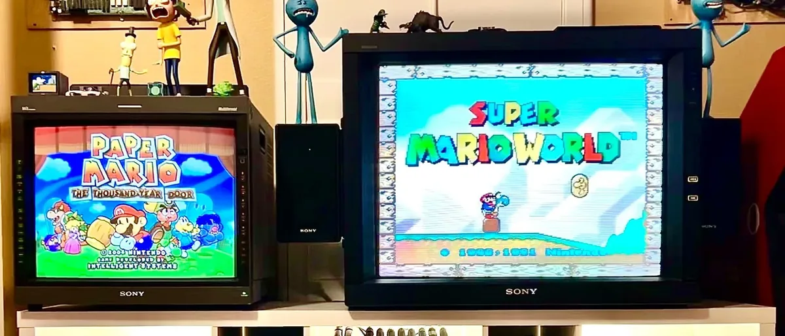
How-To 6 min readHow to Connect a Retro Console to a Sony PVM or BVM
A PVM has no SCART socket and no HDMI. The cable, the switcher, the SCART to 4 BNC breakout, sync, termination, audio — and the one box you do not need. Then the whole chain as it is wired here: eight consoles, thirteen Sony monitors, no scaler in the path.
Read the story →
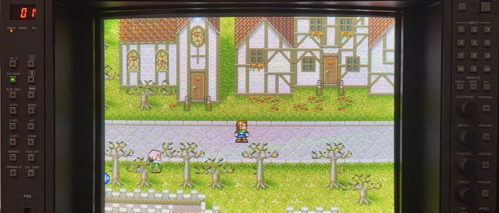
Field Guide 5 min readHow to Spot Professional Glass in the Wild
The best screens ever pointed at a game are still hiding in thrift stores, estate garages and surplus auctions, priced like old TVs. The badge, the BNC tells, the lookalikes — and the thirty-second check before you haul it home.
Read the story →
 Buyer's Guide
10 min read
Buyer's Guide
10 min readWhat to Check Before You Buy a PVM-20L5
The one check that tells you most, how to judge a tube that has no hours counter, what the bands actually are — and why a seventy-three pound monitor is something you drive to rather than something you ship.
Read the story →
 Did You Know?
5 min read
Did You Know?
5 min readThe Best Screen for Retro Games Was Never Sold to Gamers
PVM vs. BVM: what Sony's professional monitors actually were, why RGB changes everything, and which one to buy today — answered from a fleet of thirteen.
Read the story →
 Monograph
About 2 hours
Monograph
About 2 hoursThe Sony AMS-100 Has No Written History
A 1RU broadcast confidence monitor with two option slots, three input boards and not one article written about it anywhere. This is the first: seven documented frames, twelve boards, the service internals, and a market that has almost never been priced.
Read the story →
 Did You Know?
4 min read
Did You Know?
4 min readAncestor and Descendant
Sony's AMS-3 and AMS-100 do the same job in the same kind of room, more than a decade apart — one with a transformer and a wall of heatsink, one with SDI and plug-in cards. Stacked on the bench, the difference is not subtle.
Read the story →
 Magazine · Vol. 1
About 30 min read
Magazine · Vol. 1
About 30 min readTRINITRON FLEET
An interactive magazine documenting the Sony professional monitor fleet — eight models, from the PVM-2950Q to the LMD-9050 squadron, and the calibration work that keeps them honest. Future volumes will follow as the fleet evolves.
Read Vol. 1 →
Arcade & pinball The cabinets and the tables
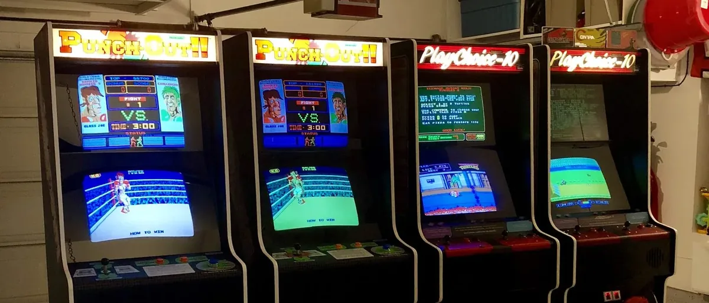
NewDid You Know? 3 min readThe Arcade Machine That Sold You the NES
In 1986 Nintendo put ten NES games in one cabinet, sold them by the minute, and gave a whole second screen to teaching you how to play. The PlayChoice-10 was an arcade machine built to send you to the toy store.
Read the story →
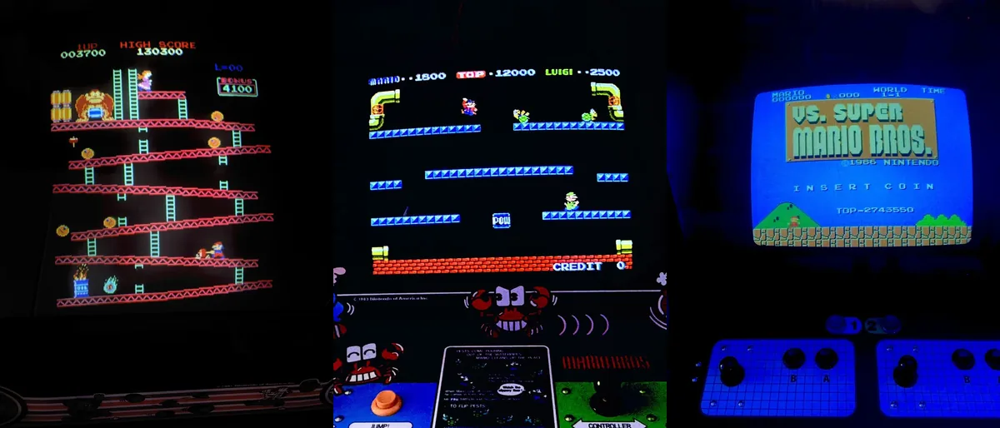
Did You Know? 5 min readMario Before He Was Super
Before the castle and the flag, Mario spent four years in arcades: a nameless carpenter in Donkey Kong, a plumber with a brother in Mario Bros., and only then the character who lands on things. Three cabinets in one row tell the origin story in order.
Read the story →
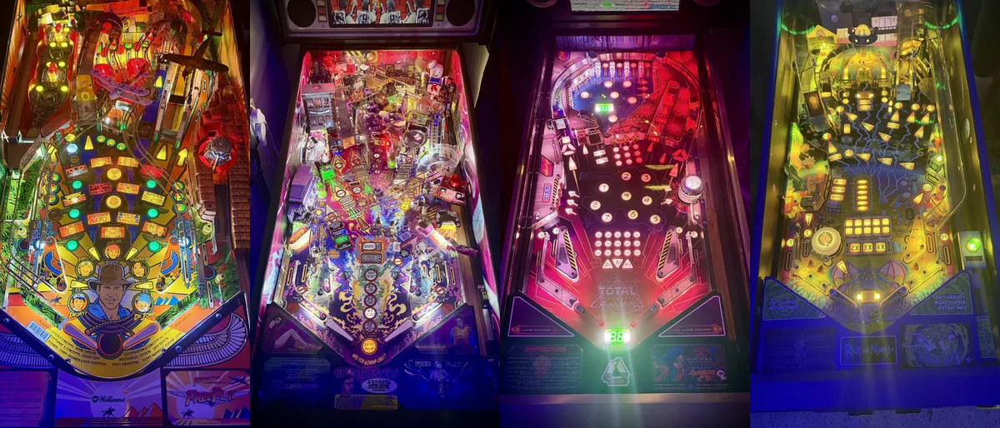
Field Guide 6 min readHow to Read a Playfield
Most people play pinball by keeping the ball alive and hoping. Every machine is covered in instructions: the lanes at the bottom, the handful of shots, what a lit or flashing light means, the card nobody reads. A beginner’s guide taught on four tables built across twenty-seven years.
Read the story →
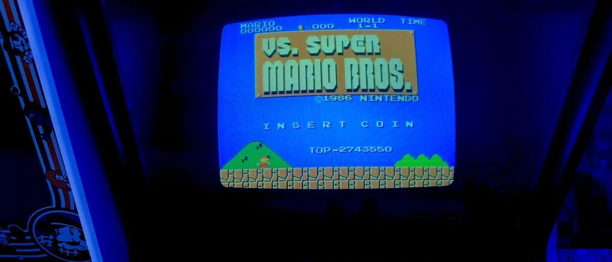
Did You Know? 2 min readThe Hardest Super Mario Bros. Most People Never Noticed
The VS. UniSystem's Super Mario Bros. looks exactly like the NES classic — and was quietly rebuilt to fight back: removed 1-ups, patched turtle tricks, and levels that later became The Lost Levels.
Read the story →
 Restoration Story
4 min read
Restoration Story
4 min readThe Red Tent
Nintendo's VS. DualSystem cocktail — found beat-up on Craigslist, restored down to the last screw, and now running VS. Excitebike on one side and a genuinely rare official PlayChoice-10 kit on the other.
Read the story →
 The Machines
3 min read
The Machines
3 min readThe Mini Cute
Capcom's smallest candy cab, built for Japanese kids in 1991 — and how this pink one crossed the world in a hand-built crate from Sweden, thanks to a friendship that started on KLOV.
Read the story →
Consoles & games The hardware on the shelf and what runs on it
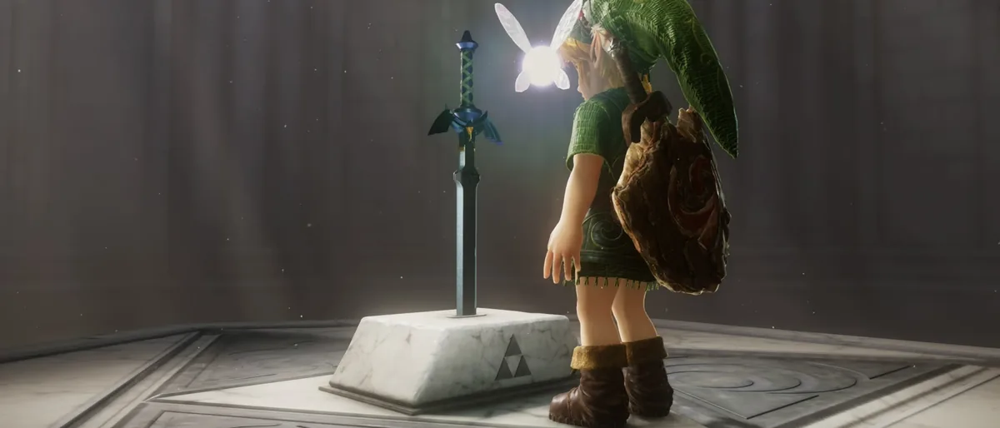
Review & Guide 10 min readOcarina of Time on Switch 2: A Review and Returning Player's Guide
If you played the N64 original you can walk the remake from memory and be right nine times out of ten. This is the tenth time: what the remake adds and leaves out, what moved, what's new, the rebalanced economy, and the gates that stall a veteran — from one full playthrough, launch day to credits.
Read the story →
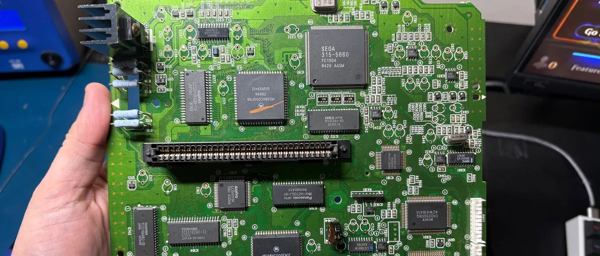
Restoration Story 4 min readThe X'Eye Comes Home
JVC's Genesis-and-Sega-CD-in-one is one of the rarer ways to play Sega, and one of the hardest to keep healthy. A full servicing at iFixRetro, board by board: every capacitor out and in, a new laser, a cleaned and greased drive, and ferroelectric RAM so a save never dies again.
Read the story →
Across the collection
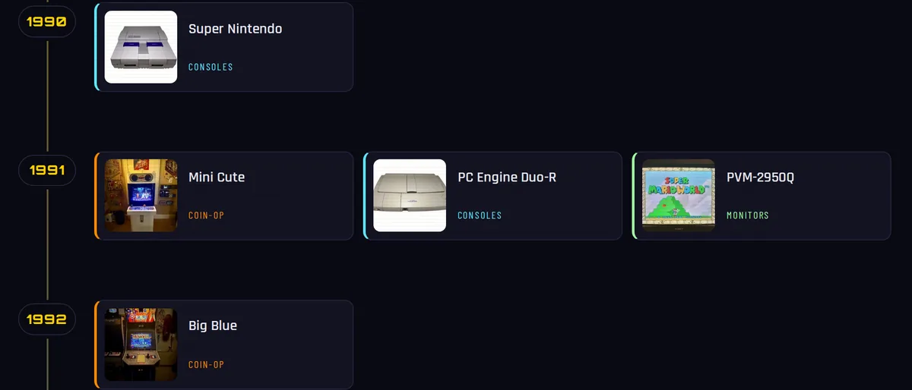
TimelineForty Years on One Line
Every machine, console and monitor plotted by the year it was released — from the 1981 Donkey Kong to the 2020 Rick and Morty, with the quiet years folded away.
See the timeline →
More in the works
More stories are on the way. The KLOV Arm Wrestling restoration thread holds you over in the meantime.
Off the beat Not about the arcade at all
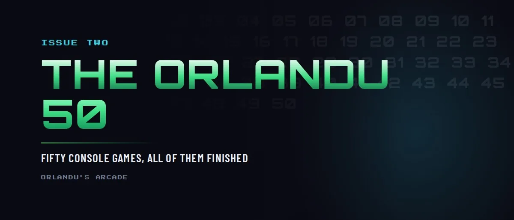
NewMagazine · Issue Two About 13 min readThe Orlandu 50
Fifty favorite console games, ordered by head-to-head duel rather than by argument — every position won against another game. One rule sits above the rest: it had to be beaten, not admired. Plus the ten that were not, and have no excuse. No CRTs, no coin doors — the same instinct pointed at a controller.
Read the issue →
Magazine · Issue One About 24 min readThe Orlandu 100
A hundred favorite films, ordered by head-to-head duel rather than by argument — every position on the list won against another film. With the Rotten Tomatoes scores beside each one, the eight this list defends hardest, and the six nobody else in the room liked either. No CRTs, no coin doors — just the same instinct pointed somewhere else.
Read the issue →